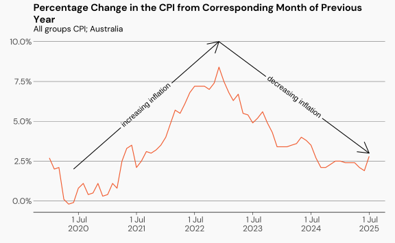
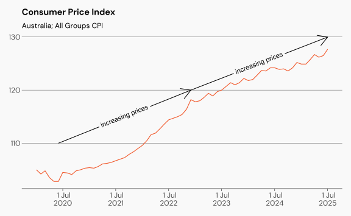
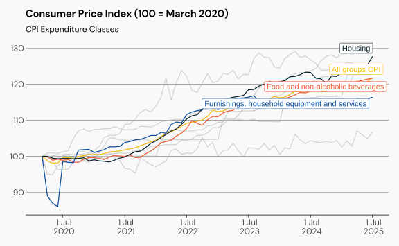
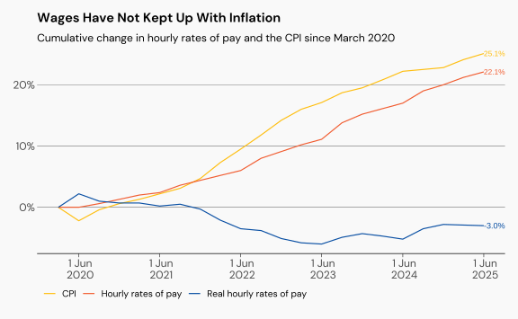
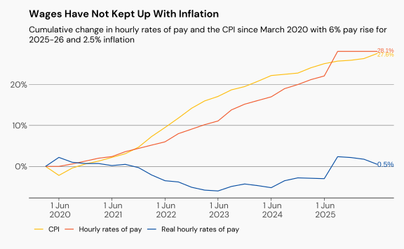
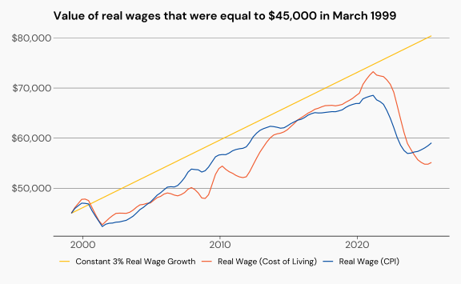

Inflation
Inflation has been a hot topic with cost of living increases, and interest rate decisions. Under neo-liberalism, inflation has become the single most important economic priority, coinciding with the increased dominance and “importance” of the financial industry and financial capital at the expense of productive industries like manufacturing.
Controlling inflation is seen as a more important policy goal than:
full employment
reducing inequality
housing affordability
alleviating poverty.
Instead of full employment, government and institutions now push the “non-accelerating inflation rate of unemployment” which suggests there is a minimum level of unemployment necessary in order to stop wages growth and rising inflation. Of course, we can’t measure the NAIRU, only show that it might exist, if a bunch of assumptions are made about how the economy works. Estimates from data suggest that it falls somewhere between 4 and 5%.
This means that it is explicit government policy to keep up-to 5% of the labour force out of work, in order to keep inflation down.
Such policy might be palatable if there was a strong social safety net to support workers who lose their job and are looking for another one. Of course, we don’t even get that, with only the below poverty JobSeeker payment available.
But it is still a very inefficient use of the labour power that our economy has access to. Why shouldn’t someone who wants to work not have access to a job? It also means that policy is designed to discipline labour.
Which by the way, is why the budget in 2024, by the nominative party of labour, forecast that the plan was to tackle inflation by driving the unemployment rate UP to at least 4.5 percent by June 2025. Cold comfort for those who find themselves unemployed.
Defining Inflation (or, the Consumer Price Index)
The CPI is a measure of changes in the price of a “basket” of goods and services.
By their nature, averages are not representative of individuals. Statistical agencies have to make a lot of decisions when calculating price indices, including:
What goes into the basket?
How should like items be grouped?
How should each group be weighted into the overall?
How often should the weighting change?
Ultimately, the basket of goods and services does not represent the spending or expenditure patterns of any one individual. There will be a disconnect between how the CPI is reported, and how you feel it as an individual.
For example, in 2025 the weight of tobacco in the CPI was reduced because tobacco sales fell as fewer people are smoking. That means increases in the price of cigarettes don’t impact on the overall CPI as much. So smokers will feel that prices are increasing faster than the CPI.
Another disconnect between reporting of the CPI and worker experiences is that mortgage payments are excluded from the housing element of the CPI - only the price of a new home (excluding land) and changes in the price of rents are included.
CPI data is reported as an index, or as a % change compared to the previous quarter, or previous year. An index shows how prices have changed relative to a value of 100 in a reference period. A percentage change measures the relative change in prices compared to another period.
Inflation - Percentage Change
Inflation - Index
While decreasing inflation (a % change in one period lower than the % change in the preceding period) is usually presented in the media as good news, it is important to remember that inflation is a measure of acceleration. Decreasing inflation means that the rate of price increases has slowed. Just because you take the foot off the accelerator, does not mean the car goes backwards.

The all groups CPI is a measure of the average price change of all groups. But the impact of price changes in some categories, like food, recreation and culture, and housing are felt differently than changes to prices in household equipment. Figure 3 shows the change in the prices of some categories.

Cost of Living
The CPI is not a measure of the cost of living. In fact there is no definitive cost of living measure collected by the ABS but the ABS does collect a living cost index, which looks at different household types expenditure patterns.
The living cost index asks “By how much would after tax money incomes need to change to allow households to purchase the same quantity of consumer goods and services that they purchased in the base period?”
| Change in living costs by product category | |
|---|---|
| % change between June 2025 and June 2024 | |
| Price Category | % change |
| Education | 5.7% |
| Alcohol and tobacco | 5.5% |
| Health | 4.3% |
| Insurance and financial services | 4.3% |
| Wages | 3.4% |
| Food and non-alcoholic beverages | 3.0% |
| Housing | 2.8% |
| All groups | 2.6% |
| Recreation and culture | 1.8% |
| Clothing and footwear | 1.2% |
| Communication | 1.0% |
| Furnishings, household equipment and services | 0.9% |
| Transport | −2.9% |
| Change in living costs by product category | |
|---|---|
| % change between June 2025 and June 2015 | |
| Price Category | % change |
| Alcohol and tobacco | 76.0% |
| Insurance and financial services | 71.8% |
| Health | 45.0% |
| Education | 42.0% |
| All groups | 34.4% |
| Food and non-alcoholic beverages | 32.8% |
| Wages | 28.7% |
| Housing | 28.2% |
| Transport | 27.3% |
| Recreation and culture | 20.6% |
| Furnishings, household equipment and services | 19.7% |
| Clothing and footwear | 2.8% |
| Communication | −20.1% |
Inflation and Wages
When discussing inflation, we need to consider the relationship between increasing prices and increasing wages. If wages are increasing at the same rate as prices, then no ones purchasing power is getting any better or worse. How this feels will depend on the historical relationship between prices and wages.
The Wage Price Index (WPI) measures the change in the price of wages. The real value of wages can be calculated by looking at the difference between the WPI, and the CPI, as shown in Figure 4. This shows that on average, prices have increased by 25.1%, and wages have increased by 22.1%. So in real terms, the purchasing power of the average wage has fallen by 3% - a decline in standard of living.

What would this chart look like if the average worker recieved a 6% pay rise for the next year, and inflation grew at the RBA’s target of 2.5%?. Figure 5 shows that this would only represent breaking even with the real value of wages in March 2020. We’re a long far behind at improvingliving standards.

Different economists will use different prices to convert nominal dollars into real dollars. The one they choose will often be the one that tells the story they want to tell. Figure 6 shows a hypothetical the change in the real value of an annual salary of $45,000 between March 1999 and today, under three scenarios - wages offset by changes in consumer price index, wages offset by changes in the cost of living, and wages increased in real terms by 3% each year.
